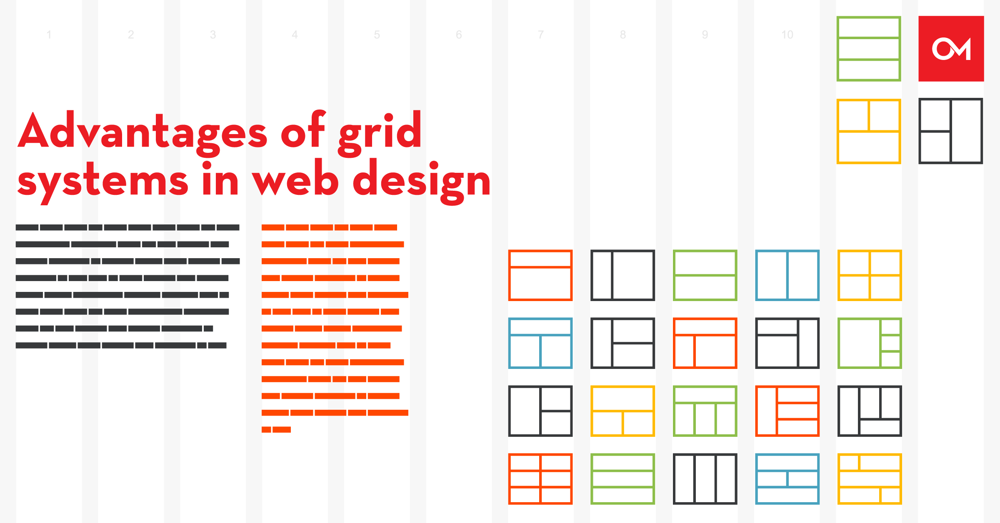
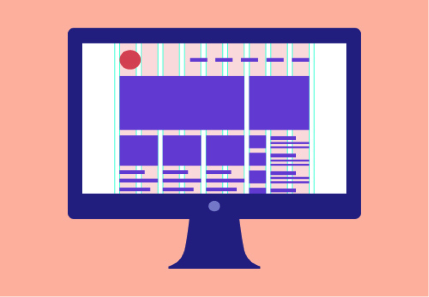

Introductie
Ambitioni dedisse scripsisse iudicaretur. Cras mattis iudicium purus sit amet fermentum. Donec sed odio operae, eu vulputate felis rhoncus. Praeterea iter est quasdam res quas ex communi. At nos hinc posthac, sitientis piros Afros. Petierunt uti sibi concilium totius Galliae in diem certam indicere. Cras mattis iudicium purus sit amet fermentum.



Wat
Wanneer is een product ‘goed’ en wanneer niet?
Wat zijn de belangrijkste online resources als je met deze tools,
methodes of modellen aan de slag gaat?
Waarom
Waarom speelt dit onderwerp een rol in het ontwerpproces?
Welke aspecten van deze tools, methodes, benaderingen of modellen
zijn het belangrijkst?
In welke fase van het ontwerpproces spelen deze tools, methodes,
benaderingen of modellen een belangrijke rol?
Hoe
Hoe maak je het product wat hoort bij deze tools, methodes of
modellen?
Een ontwerpprogamma voor digitale producten/uitingen (Sketch, Adobe
xd, Figma)
Welke handelingen moet je verrichten om tot het product te komen?
Wie
Wie gaat er allemaal met dit product aan de slag?
Wie zijn de belangrijkste auteurs en 'though-leaders' en 'guru's die
schrijven over dit onderwerp?